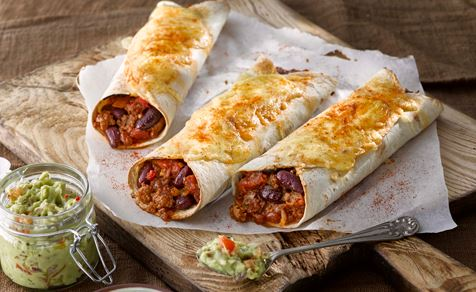

Spicy Beef Burritos

Description
This delicious recipe will class up any burrito and make followers of your loved ones. All Hail The Burrito.
Ingredients
- 6 ounces sliced jalapeno peppers
- 1 tomato, diced
- 1 (4 ounce) can chopped green chile peppers
- 1 green bell pepper, diced
- 1 red bell pepper, diced
- 1 onion, diced
- 1 ½ tablespoons hot sauce
- ¼ teaspoon ground cayenne pepper
- 1 pound ground beef
- 1 (1 ounce) package burrito seasoning
- 1 (14 ounce) can refried beans
- 6 (10 inch) flour tortillas
- 1 (10 ounce) bag shredded lettuce
- 1 (8 ounce) container sour cream
- 1 (8 ounce) package shredded sharp Cheddar cheese
Steps
- Step 1 - Mix jalapeno peppers, tomato, green chile peppers, green bell pepper, red bell pepper, onion, hot sauce, and cayenne pepper together in a large bowl.
- Step 2 - Cook beef in a large skillet over medium-high heat, stirring to break up clumps, about 5 minutes. Drain excess grease. Add jalapeno pepper mixture and burrito seasoning; cook, covered, stirring occasionally, until flavors combine, about 10 minutes.
- Step 3 - Pour refried beans into a saucepan over medium-low heat. Cook and stir until heated through, about 5 minutes.
- Step 4 - Warm each tortilla in the microwave until soft, 15 to 20 seconds. Spread a layer of refried beans on top. Divide beef mixture among tortillas. Top with lettuce, sour cream, and Cheddar cheese. Fold in opposing edges of each tortilla and roll up into a burrito.